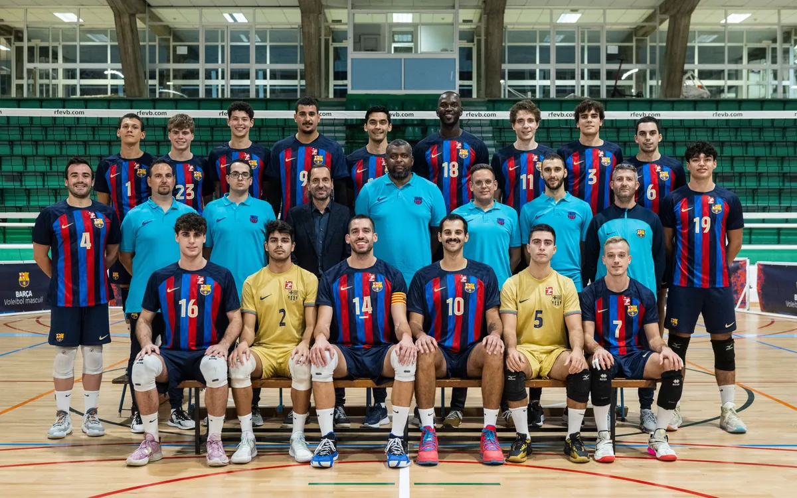
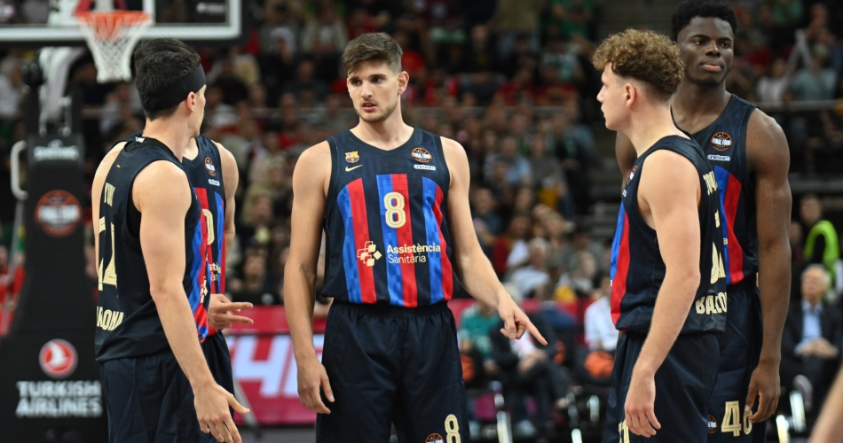

Futbol Club Barcelona (Catalan pronunciation: [fubˈbɔl ˈklub bəɾsəˈlonə] i), commonly referred to as Barcelona and colloquially known as Barça ([ˈbaɾsə]), is a professional football club based in Barcelona, Catalonia, Spain, that competes in La Liga, the top flight of Spanish football. Founded in 1899 by a group of Swiss, Catalan, German, and English footballers led by Joan Gamper, the club has become a symbol of Catalan culture and Catalanism, hence the motto "Més que un club" ("More than a club"). Unlike many other football clubs, the supporters own and operate Barcelona. It is the third-most valuable sports team in the world, worth $5.51 billion, and the world's fourth richest football club in terms of revenue, with an annual turnover of €582.1 million.[2][3] The official Barcelona anthem is the "Cant del Barça", written by Jaume Picas and Josep Maria Espinàs.[4] Barcelona traditionally play in dark shades of blue and garnet stripes, hence nicknamed Blaugrana.
| NAME | Age | Clubs | one Achievment of each club | Numer of goals scored |
|---|---|---|---|---|
| Lionel Andrés Messi | 35 | Barcelona , PSG , Inter Miami | La liga , Ligue 1, Leagues cup | 672 , 32 , 11 |
The club was founded in 1970. It has since become one of the most successful volleyball teams in Spain. The team plays in the Spanish Superliga, which is the top professional volleyball league in Spain.The team is known for its aggressive style of play, with a focus on strong serving and attacking. Over the years, FC Barcelona has won many titles, including the Spanish Superliga, Spanish 2nd superliga. The team has also represented Spain in international competitions, including the FIVB Club World Championship and CEV Champions League.

FC Barcelona Bàsquet (English: FC Barcelona Basketball), commonly referred to as FC Barcelona (Catalan pronunciation: [fubˈbɔl ˈklub bəɾsəˈlonə] i) and colloquially known as Barça ([ˈbaɾsə]), is a professional basketball team based in Barcelona, Catalonia, Spain. It is a part of the FC Barcelona multi-sports club, and was founded on 24 August 1926, which makes it the oldest club in the Liga ACB. The team, which competes in the Liga ACB and the EuroLeague, is one of the most successful basketball teams domestically as well as internationally. Two times European champions, Barça completed a triple crown in 2003 by winning the season's league, cup and EuroLeague. Their home arena is the Palau Blaugrana, which was opened on 23 October 1971. They share the facilities with the roller hockey, futsal, and handball teams of the club. Some of the well-known players that have played with the team included Pau Gasol, Rony Seikaly, Marc Gasol, Anderson Varejão, Juan Carlos Navarro, Jaka Lakovič, Šarūnas Jasikevičius, Dejan Bodiroga, Gianluca Basile, Ricky Rubio, Juan Antonio San Epifanio, Saša Đorđević, and Tony Massenburg. FC Barcelona also has a reserve team, called FC Barcelona Bàsquet B, that plays in the Spanish 2nd-tier LEB Oro.
